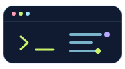
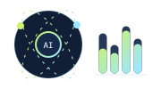
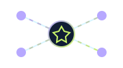
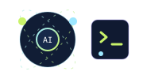
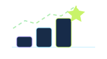

Stay curious
Ask better questions, follow the trail, and keep learning in public.
Available for meaningful builds
BCA graduate transitioning into AI/ML engineering, with hands-on experience in Python, Java, machine learning, Django, MongoDB, and practical web development.
A little context
BCA Graduate transitioning into AI/ML engineering, with hands-on experience in Python, Java, machine learning, artificial intelligence, Django, and MongoDB. I learn through curiosity-driven exploration and practical application, building projects that strengthen my understanding of data, models, backend development, and AI systems.
I am focused on developing reliable technical foundations, experimenting with new tools, and turning concepts into working solutions. My current goal is to prepare for an entry-level AI/ML Engineer role where I can contribute, learn from experienced teams, and continue growing through meaningful project work.
Start a conversation ↗Ask better questions, follow the trail, and keep learning in public.
Make technology useful, accessible, and easy for the next person to understand.
Explore what is possible without losing sight of real-world impact.
Skills & interests
Organized around the technologies, data tools, and working strengths I bring to practical projects.
Machine learning, artificial intelligence, and data-driven experimentation.
Python, Django, Java, and database-backed applications.
HTML, CSS, JavaScript, Node.js, and React.js.
NLTK, spaCy, Scikit-Learn, MongoDB, and MySQL.
Git, GitHub, VS Code, teamwork, and problem solving.
Skills directory
Core technologies, AI tools, and working strengths I use to turn ideas into practical solutions.



Languages
The workbench
Practical work across AI/ML, web development, and thoughtful digital experiences.
Developed an AI-powered Resume Analyser using Python and Django that compares resumes with job descriptions. The system extracts resume information, matches skills and qualifications with job requirements, generates a compatibility score, and provides a detailed analysis report.
Contributors: Abdul
View live demo ↗Next on the workbench
Ideas still in the planning and exploration stage—not completed projects.
A planned smart home concept connecting AI, IoT, robotics, and automation into one adaptive system. This project is not completed yet.
An upcoming exploration of large language models and practical AI applications. This project is still in the planning stage and is not completed yet.
Project link to be added —↳ More experiments are on the way. Follow the journey on GitHub.
Experience, education & certifications
Learning through practical work, focused study, and projects that turn ideas into working solutions.

01 / internshipCodec Technologies · Apr 2026 — May 2026 · 2 mos
Worked on artificial intelligence concepts and practical applications. Assisted with the development and testing of an AI-based project, applying Python and machine learning concepts during project development.
Back-End Web Development · Front-End Development
Bachelor of Computer Applications
Harsha Institute of Management Studies
Bangalore University
Aug 2023 — Aug 2026
Problem SolvingCodec Technologies India
Issued Apr 2026 · Expired May 2026
Skills: Artificial Intelligence (AI) · Front-End Development · +1 skill

04 / currentlyJava · web development · AI tools · automation
05 / contact
Whether you want to talk about a project, an opportunity, or the future of AI, my inbox is open.